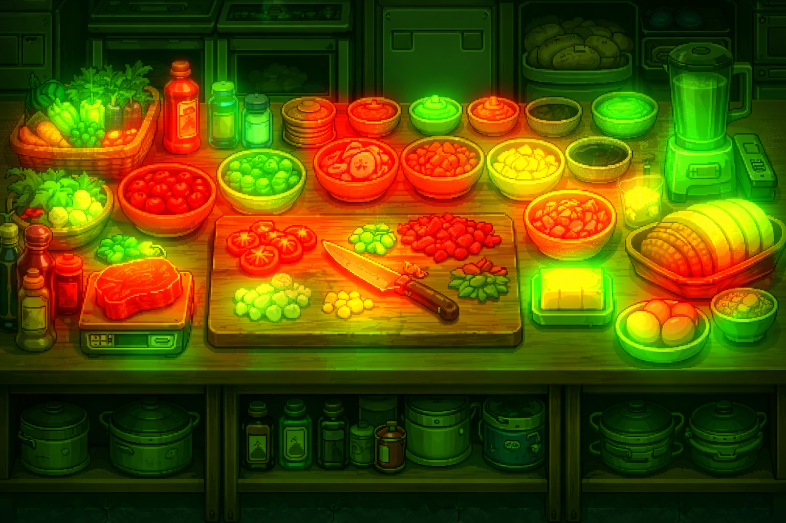
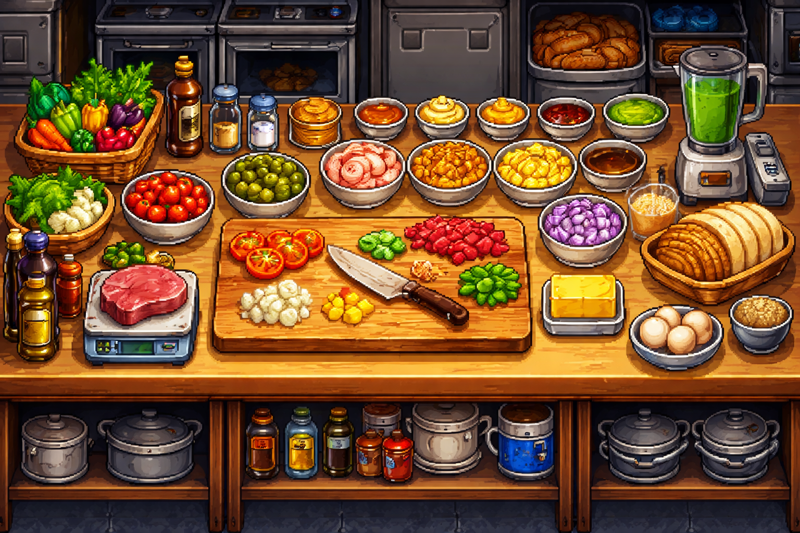

What this guide is for
You’ve probably used ChatGPT, Claude, Gemini, or Copilot—and perhaps you even went a little crazy and tried Grok. You’ve seen AI do impressive things. You also may have seen it confidently state that there are two R's in strawberry.
While this guide won’t make you an AI researcher, it will give you the information you need to:
- Write better prompts that get more predictable, verifiable results
- Understand why AI “forgets,” drifts, or hallucinates
- Run multi-step workflows that produce usable results
The AI restaurant sim
Throughout this guide, we'll be using a kitchen sim metaphor to help reinforce each concept:
- The Cook (AI model) works quickly, but can only create using the ingredients and tools in front of them.
- Your Order Ticket (prompt) is the objective, rules, and output format: what to cook, substitutions/allergies, and how to plate it.
- The Prep Counter (context) is everything the chef has right in front of them to work with: attachments or links submitted with the prompt.
- Your Inventory (context window) is limited. The counter space gets too crowded, older items might fall off.
- Tools (calendar, spreadsheet, search) determine if the chef has access to a pantry for extra ingredients, cookbooks to research recipes, or use an appliance like a brulee torch.
Mise en Place: How LLMs Generate Text (and Why the Prompt Matters)
Everyone around you has probably been raving about AI recently. Your social media feed is full of influencers showing how AI sends them a text every morning with a daily to do list, plans all their meals, and reads them a bedtime story at night.
So, you decide to try it out by asking for something simple, it answers confidently:
Who would win in a fight in 2025? Elon Musk or Mike Tyson?
Your phone already does this (badly)
You've actually seen this mechanism before: start typing a text message and your phone suggests the next word. Type "I went to the" and it offers "store" | "park" | "hospital." That's next-word prediction—called an n-gram—the same core idea behind every LLM.
The difference? Your phone's keyboard uses a simple lookup: "what word most commonly follows these last one or two words?" It doesn't know you were planning a beach trip three messages ago. It doesn't understand context—it understands frequency.
The upgrade: looking at the whole counter
LLMs use the same core mechanic—predict the next token—but instead of glancing at the last word or two, they look at everything currently on the counter (the full context window). That's why an LLM can connect "surgeon" to "scalpel" even when they're sentences apart.
Power-up (optional): N-grams—the phone's cheat sheet
An n-gram is a sequence of n consecutive words. Your phone's predictions are powered by tables of these:
- Unigram (n = 1): single-word frequency. "The" is one of the most common English words, so it gets suggested constantly.
- Bigram (n = 2): word pairs. After "of the" → "most" | "best" | "world." After "going to" → "be" | "the" | "get."
- Trigram (n = 3): three-word chains. "One of the" → "most." "I want to" → "go" | "be" | "know."
The phone stores a frequency table of these sequences (often personalized to your texting habits) and picks the highest-scoring match. The window is tiny—usually 1–3 words—so it has no ability to track meaning, themes, or instructions from earlier in the conversation.
Try this: open your phone, type a word, then keep tapping the middle suggestion 20 times. You'll get a grammatically plausible but meaningless sentence—that's n-gram prediction running on autopilot with no broader understanding.
Same prompt, different response
You may have noticed that entering the same prompt into the same LLM can produce different answers. This is because when the model generates text, it considers lots of possibilities for the next word (token) and scores them. Then the system chooses one based on a setting referred to as the temperature which controls how strongly it sticks to the top choice vs. how willing it is to take a less-likely option.
Imagine ordering chocolate chip cookies for dessert—a temperature of 0 means the chef follows the standard recipe exactly as written. A temperature of 1 means the chef will put its own spin on the recipe, so you might get oatmeal chocolate chip or browned butter pecan, but you're still getting cookies. Now a temperature of 2 means the chef can get truly creative and you might end up receiving spaghetti and watermelon balls with a chocolate marinara, topped with a candied fennel garnish.
Standard recipe
Stable and repeatable (nearly the same each run).
Chef’s special
Varied and improvisational (poetic or pure nonsense).
Why prompts matter more than people expect
The model’s default job is to produce a coherent continuation of whatever you put in front of it. If your prompt is vague, “coherent” often means it picks an interpretation it thinks is most likely and commits—hello, chocolate spaghetti with watermelon. If your prompt is specific (gluten-free vegan chocolate chip cookies with cinnamon, no fruit or nuts), “coherent” shifts towards what you actually want.
TL;DR
- Your order ticket (prompt) tells the chef (LLM model) what you want.
- The chef then cooks your order one ingredient (token) at a time.
- A more specific order ticket doesn't make the chef better at cooking—it provides the chef more context to make your order the way you envisioned.
- Different chefs can cook the same order in vastly different ways. If you want the standard recipe, Copilot might be your best bet; but if you're feeling adventurous and have a steel gut, Grok is ready with the Chef's special.
The Prep Counter: Context Windows, Drift, “Forgetting,” and the Dreaded Hallucination
In the last section we established that our LLM chef generates text one token at a time by scanning everything on its prep counter. But here's the catch: that counter is not infinite. Every model has a fixed amount of counter space called its context window, measured in tokens. Once the counter is full, something has to go.
Counter space: bigger isn't always better
Context windows have gotten dramatically larger over the past few years. Early GPT models had roughly 4,000 tokens of counter space—about three pages of text. Today, some models advertise windows of 128K, 200K, or even 1 million tokens. That sounds like the chef upgraded from a cutting board to a full commercial kitchen island. And to help our chef work quickly and efficiently, all that additional space came with new cookbooks and countertop appliances that also use that new space.
But here's what the marketing doesn't tell you: more counter space also means more stuff for our chef to keep track of. So our chef might remember what was on the counter when they started cooking and they can easily see the last few items that were added, but everything in between is slowly being buried or shoved to the side. This is where attention comes into play.
Attention—how LLMs look at the whole counter
In n-gram prediction, the model only sees a fixed window of 1–3 words. LLMs replace that tiny window with a mechanism called attention. For each new token the model is about to generate, attention assigns a relevance score between that position and every other token already on the counter. Think of it as the cook glancing back across all the ingredients and deciding which ones matter right now. This is the core of the transformer architecture (the "T" in GPT). There is a tradeoff though: attention across all tokens is computationally expensive and scales with the size of the context—which is one reason context windows have limits and longer prompts cost more.
 
Power-up (optional): The mechanics of attention
Attention is the Transformer mechanism that lets each token pull in and mix information from other tokens in the context. It acts like differentiable retrieval: “given what I need at this position, which earlier tokens are most relevant?”
Mechanically, the model projects token representations X into queries, keys, values:
Q: what this token is looking forK: how each token can be matchedV: the information to combine
It computes relevance with scaled dot products, normalizes with softmax, then mixes values:
Attn(Q, K, V) = softmax((QKᵀ / √d_k) + mask) VIn GPT-style LLMs, a causal mask blocks attention to future tokens so generation is valid.
LLMs use multi-head attention so different heads can learn different dependency patterns in parallel, and they inject positional information (e.g., RoPE/relative encodings) so attention is sensitive to word order. During generation, KV caching stores past keys/values to avoid recomputing them each step. Full attention scales quadratically with context length (O(n^2)), which is why long contexts are expensive.
Drift: when the model gradually stops following the rules
In long AI conversations, you may see the model follow your instructions perfectly at first—then slowly begin to bend them. For example: your prompt says “use bullet points only,” it complies, and ten messages later it starts writing paragraphs. That gradual loss of adherence is known as drift.
Drift happens because the model is generating each reply based on the entire visible conversation. As the thread grows, your original instructions become a smaller and less prominent part of the context compared to newer messages, new subgoals, and recent wording. The model also tends to match the most recent style and priorities unless constraints are kept explicit.
To reduce drift, periodically restate the constraints that matter, preferably as a short, consistent rule block (e.g., “Format: bullets only. Length: <150 words. Tone: direct.”). This keeps the rules salient and reduces the chance they’re implicitly overridden by newer content.
“Forgetting”: the counter has an edge
Drift is gradual—your instructions are still technically on the counter, just buried. Forgetting is what happens when the conversation exceeds the context window entirely. At that point, the oldest messages literally fall off the edge of the counter. The chef doesn't know they ever existed.
This is not a bug. It's a hard physical constraint called context overflow—like a counter that can hold a maximum of 10 ingredients. Adding an 11th ingredient knocks ingredient one to the floor. Most LLM interfaces handle this silently: they drop or summarize the oldest messages to make room, and the model has no idea anything was removed.
This is why you might have a conversation where the AI researched a song title for you in message three, and by message 40 it has no memory of that song existing. It simply slid off the counter.
Drift
Your instructions are still on the counter but buried under newer context. The chef could see them—it's just focused elsewhere.
Forgetting
Your instructions have fallen off the counter entirely. The chef cannot see them—they no longer exist in its world.
Power-up (optional): What actually happens when context overflows
Different platforms handle overflow differently, and most don't tell you when it's happening:
- Truncation: The oldest messages are silently dropped. This is the simplest approach—first in, first out.
- Sliding window: The system keeps your original system prompt pinned at the top and drops the oldest conversation turns from the middle. This preserves your initial instructions but loses early conversation context.
- Summarization: Some systems use a secondary model to compress older messages into a short summary before dropping them. The chef gets a sticky note that says “earlier we discussed X” instead of the full conversation—better than nothing, but details get lost.
None of these are perfect. The practical takeaway: for important, multi-step work, don't rely on a single marathon conversation. Break it into shorter sessions and carry forward the key context yourself.
Hallucination: the chef that never says “I don’t know”
This is the big one—the behavior that makes people distrust AI entirely, or worse, trust it when they shouldn’t.
A hallucination is when a model produces a claim that sounds confident and well-formed, but isn’t actually supported by the information it has. It might invent a study, fabricate a quote, misstate a law, or confidently “fill in” a missing detail that was never verified.
Under the hood, the core engine is still a next-token generator: given the text in front of it, it predicts what a good-sounding continuation looks like. If it’s operating in a closed-book mode (no tools, no retrieval), it isn’t checking a database or consulting the internet—it’s pattern-completing from what it learned during training and what you’ve provided in the chat. When the real answer isn’t present, the model can generate something that resembles an answer without actually being one.
Modern systems complicate this in a good way: many LLM products can now look things up using search, retrieval (RAG), or other tools, and that can dramatically reduce hallucinations—when the tool is actually used and the retrieved sources are reliable. But it doesn’t make the problem disappear. The model can still misread what it finds, summarize incorrectly, mix together multiple sources, cite the wrong thing, or—if lookup fails or isn’t available—quietly fall back to fluent guessing.
Back in the kitchen: sometimes the chef can step off the line and check the cookbook, call the supplier, or peek in the walk-in—that’s browsing and retrieval. It helps. But what if the cookbook is missing a page, the supplier gives bad info, or the chef is rushing? And if the chef has been trained to always serve something, they’ll improvise rather than admit they don't know how to make your order. So, you still get a plate that looks right but it might not be edible.
Power-up (optional): Why can't they just… not hallucinate?
This is one of the most common questions people ask. Part of the answer is architectural, and part of it is incentives.
At the core, an LLM generates text by predicting likely next tokens from patterns learned during training. It isn’t running a “truth check” as it writes, and it doesn’t automatically ground claims in a source of record. So it can produce a fluent sentence that sounds right even when it isn’t.
It’s also worth separating uncertainty from honesty. The model may be internally “unsure” in the sense that multiple continuations are plausible, but unless the system is explicitly designed to surface that uncertainty, it still has to pick one concrete continuation—and concrete answers often come out sounding confident by default.
On top of that, many chat models are tuned to be helpful and decisive. Depending on how they’re trained and deployed, they may be implicitly (or explicitly) discouraged from responding with “I don’t know.” If the system rewards always producing an answer—or penalizes refusals and hedging—the model learns a style that fills gaps with plausible detail instead of stopping short.
Researchers mitigate hallucination in layers: retrieval-augmented generation (RAG) can ground responses in provided sources; preference tuning (often called RLHF) can teach models to hedge, refuse, or ask for clarification; and some products add post-generation verification (citations, consistency checks, tool-based fact checking). These help a lot, but they don’t fully eliminate hallucination—because the underlying generator is still optimizing for “plausible continuation,” not “guaranteed truth.”
Why hallucinations are hard to spot
The dangerous part isn't that LLMs make things up—it's that the made-up content is structurally indistinguishable from the accurate content. The model uses the same confident tone, the same formatting, the same grammatical polish whether it's giving you a real fact or an invented one. There's no italics for “I'm guessing here” and no red flag emoji for “I made this up.”
This means verification is not optional. It's not a nice-to-have for cautious people—it's a core part of using these tools responsibly. If the model gives you a statistic, a name, a date, a quote, a URL, or a citation: check it. Not because the model is bad, but because it was never designed to be a fact database. It was designed to produce plausible text.
Likely reliable
- Well-known facts
- General explanations of common concepts
- Code patterns for popular frameworks
- Structural tasks (formatting, summarization, rewriting)
Verify before trusting
- Specific statistics, dates, or numbers
- Direct quotes attributed to real people
- Citations, URLs, or references to studies
- Niche or recent facts
TL;DR
- The context window (prep counter) is finite and every model has a hard limit.
- Attention is how the LLM decides what is most relevant when looking at everything in the context window.
- Drift happens when your original instructions get drowned out by a growing conversation. Restate key rules periodically.
- Forgetting happens when conversation history exceeds the context window and older messages are silently dropped. Break long tasks into shorter sessions.
- Hallucinations happen because the model predicts plausible text, not verified facts. It will never say “I don't know”—it will always serve something.
- Verification is not optional. If the output includes specific facts, check them before trusting them.
The Order Ticket: Why One Prompt Is Never Enough
You now understand how the chef cooks (one token at a time) and how the prep counter works (finite, prone to drift and forgetting). The third piece of the puzzle—and the one you have the most control over—is the order ticket itself: your prompt.
Most guides on prompt engineering focus on clever tricks: magic phrases, special formatting, secret keywords that unlock better output. Some of those tips are useful. But the single most important skill isn't writing one perfect prompt—it's understanding that one prompt is almost never enough.
"Make me something good"
Walk into a restaurant and tell the chef "make me something good." You'll get a dish. It might even be decent. But it probably won't be what you had in mind, because the chef had to guess your preferences, dietary restrictions, mood, and expectations—all from four words.
That's what most people do with AI. They type a single prompt, get a mediocre result, and conclude the tool isn't very useful. But the problem wasn't the chef—it was the ticket. A vague order produces a generic dish. Every time.
Now, "make me something good" isn't necessarily a bad prompt—in fact, open-ended prompts can be useful early on, when you’re exploring and need inspiration or a brainstorming partner. Once you do have a clear sense of what you want (and what you don’t), it’s often worth starting a new chat with a fresh prompt that states those requirements explicitly. This keeps outdated assumptions and abandoned ideas out of the context window—and makes it easier for the model to stay aligned as the conversation grows.
One ticket is never enough
Here's what experienced AI users understand that casual users don't: the first response is just a draft, not a finished product. The real work starts after you read what comes back.
Think about how you'd approach the same task without AI. If you needed to write a project proposal, you wouldn't sit down and produce a polished final version in one pass. You'd outline, draft, re-read, cut what doesn't work, restructure, get feedback, and revise. The process is iterative because good work is iterative.
AI is the same. The best results come from a draft-and-revise loop:
- First pass: Give the model a prompt. Read what comes back. Don't accept or reject—evaluate.
- Identify gaps: What's wrong? What's missing? What did it misinterpret? What's actually good that you want to keep?
- Refine: Update your prompt with more specific instructions, corrections, or constraints. Run it again.
- Repeat until the output matches what you need—or until you realize you need to restructure your approach entirely.
This is not a sign of failure. A chef expects to taste and adjust seasoning. A designer expects to iterate on mockups. A writer expects to revise drafts. The tool didn't fail—you're just not done yet.
Why AI can't replace experience
There's a persistent fantasy that AI will let anyone produce expert-level work without expert-level knowledge. Write legal contracts without understanding law. Debug code without knowing how to program. Design systems without production experience. Just type what you want and let the AI handle the rest.
This gets the relationship exactly backwards. AI is an amplifier, not a replacement. It amplifies what the user already knows. An experienced developer using AI can produce code faster because they can read the output, spot the bugs, evaluate the architecture, and give precise feedback when something is wrong. A non-developer using the same AI will accept buggy code, miss security vulnerabilities, and have no way to evaluate whether the output actually works—because they don't know what to look for.
Back in the kitchen: an experienced foodie can taste a dish and say "needs acid, too much salt, the protein is overcooked." That feedback is specific and the chef can adjust precisely. Someone who's never cooked might say "it tastes weird" or, worse, not notice anything is wrong at all.
What goes into a good prompt
There's no single "correct" prompt format, but effective prompts tend to include the same kinds of information:
- Role / context: Who is this for? "You're writing for a technical audience" or "explain like I'm a 5-year-old" gives the model a frame to work within.
- Task: What specifically needs to be done? Not "help me with my proposal" but "write a 300-word introduction arguing that AI-powered rocks are the way of the future."
- Constraints: What should the model avoid or limit? "No jargon," "under 500 words," "don't include personal opinions."
- Format: How should the output be structured? "Use bullet points," "respond as a table with columns for X, Y, and Z."
- Examples: If you have a specific style or pattern in mind, show it. Models are excellent at pattern-matching from examples.
You don't need all five for every prompt. A quick question doesn't need role and format specifications. But for anything substantial—drafting content, analyzing data, generating code—the more of these fields you fill in, the closer the first draft will be to what you actually need, and the fewer revision cycles it will take.
Vague prompt
"Write me an email about the project update."
Specific prompt
"Write a 3-paragraph email to my team summarizing this week's iRock Pro MAX+ progress. Tone: professional but warm. Include: API migration is 80% complete, QA starts Monday, need 3 volunteers for user testing by EOD Friday. End with bullet-point action items."
TL;DR
- A single prompt rarely produces a finished result. Treat the first response as a rough draft and iterate.
- The revision loop—prompt, evaluate, refine, repeat—is the normal workflow, not a sign of failure.
- AI amplifies expertise. Professionals get better results because they can evaluate and correct the output. Novices can't tell when the output is wrong.
- Good prompts include context, a specific task, constraints, output format, and examples when relevant.
- You don't need prompt tricks. You need the same skills you'd use doing the work manually: clear thinking, critical evaluation, and willingness to revise.
Running the Line: Workflows, Agents, and the Expo Pass
You can now write a solid order ticket and iterate until the dish is right. But some orders are too big for a single ticket—no matter how refined it is. Asking one prompt to research, analyze, draft, format, and fact-check a complex deliverable is like asking one cook to simultaneously run the grill, the sauté station, and the dessert counter. It might work for a grilled cheese. It won't work for a five-course meal.
This is where station workflows come in: breaking a complex task into a sequence of focused steps, each with its own prompt, its own inputs, and a clear handoff to the next.
Why single prompts break down
For simple tasks—a quick summary, a format conversion, a short email—a single prompt works fine. But as complexity grows, three problems compound:
- Context overload: The more you ask for in one prompt, the more the model has to juggle. Instructions get buried, priorities blur, and the output becomes a mediocre average of everything you asked for instead of being excellent at any one thing.
- No checkpoints: If step 2 goes wrong in a 5-step process and you only see the final output, you can't tell where things derailed. You receive a bad dish and no way to diagnose where the kitchen went wrong.
- Drift at scale: Long, complex prompts fill the context window faster. The model starts losing track of constraints from earlier in the prompt—the same drift problem discussed earlier, compressed into a single turn.
The kitchen line
Professional kitchens don't have one person doing everything. They run a line: a sequence of specialized stations, each responsible for one part of the meal. Prep handles ingredients. Grill handles proteins. Sauté handles sides. Pastry handles dessert. The expediter (expo) sits at the end, inspecting every plate before it goes out.
The same model works for AI. Instead of one massive prompt, you break the task into stations:
- Each station has one job. "Clean up these notes." "Extract the action items." "Draft the summary." Not all three at once.
- Each station gets focused input. The output of the previous station becomes the input for the next—not the entire conversation history.
- You check at each handoff. Before passing output to the next station, review it. Catch errors now, not three stations later.
This works whether you're running each station manually (copying output into a new prompt) or using tools that chain steps automatically. The principle is the same: focused steps with verified handoffs.
Task: turn rough meeting notes into a stakeholder-ready summary
The expo pass: nothing leaves without a check
In a professional kitchen, no plate reaches the table without passing the expo—the expediter who checks every dish for accuracy, presentation, and completeness. Wrong garnish? Sent back. Missing side? Caught before the customer sees it.
In AI workflows, the expo is you. After the final station produces output, you verify it before anyone else sees it:
- Does it match the original request? Not what the model decided you meant—what you actually asked for.
- Are the facts checkable? Any specific claims, statistics, or references should be verifiable from real sources.
- Did anything get lost between stations? Compare the final output against earlier station outputs. Did the summary drop an action item? Did formatting swallow a data point?
- Is the quality of the work sufficient? If not, it's not done.
The expo pass isn't an optional step for cautious people. It's the step that makes everything before it worth doing. A kitchen that sends out unchecked plates will eventually send out something inedible—and an AI workflow that skips verification will eventually produce something inaccurate, embarrassing, or worse.
Agents: when the kitchen runs itself (mostly)
You may have heard the term AI agent—a system where the model doesn't just respond to a single prompt but actively plans, uses tools, and executes multiple steps on its own. Think of it as upgrading from a single cook who waits for orders to a small crew that can coordinate stations without you calling out every ticket.
Agent capabilities are expanding rapidly: coding assistants that read files, write code, and run tests in sequence. Research tools that search the web, synthesize sources, and draft reports. Workflow tools that create project plans, draft communications, and schedule follow-ups—all from a single high-level instruction.
This is powerful. It's also not magic. An agent is still running the same station-by-station workflow—it just handles the handoffs automatically instead of requiring you to copy-paste between prompts. The fundamental limits haven't changed:
- The context window is still finite. Agents manage it more efficiently, but they don't eliminate it.
- Hallucinations still happen. Agents with tool access hallucinate less, but not zero.
- Drift still compounds. A 15-step agent workflow can drift just like a 15-message conversation.
- Experience is still mandatory. Agents are fallible, so experience is needed for tighter prompts and reliable verification.
The difference between using an agent well and using one poorly is the same as everything else in this guide: you're still the expediter. You set the objectives. You define the constraints. You check the output before it ships. The agent runs the line—you run the kitchen.
Power-up (optional): Tools—the pantry, the cookbook, and the torch
Throughout this guide we've mentioned that some models can "look things up" or "use tools." Here's what that actually means under the hood.
A base LLM can only work with what's already on the prep counter—your prompt, the conversation history, and whatever fits in the context window. Tools give the chef access to things beyond the counter: a pantry to grab fresh ingredients (file uploads, databases), a cookbook to look up recipes (web search, retrieval), or a specialized appliance like a brûlée torch (code execution, image generation, API calls).
Mechanically, tool use works like this:
- The model decides it needs something it doesn't have and generates a structured request—essentially saying "I need to search for X" or "run this code."
- The system (not the model) executes that request: runs the search, executes the code, reads the file.
- The result gets placed back on the prep counter as new context, and the model continues generating with that information available.
Common tool categories:
- Search / browsing: The chef checks a cookbook or calls a supplier. Grounds responses in current, external information instead of relying on training memory alone.
- Code execution: The chef fires up an appliance—running Python, doing math, processing data. The model writes the code; a sandbox executes it and returns results.
- File reading: You hand the chef a document, spreadsheet, or image. The contents get placed on the counter as context for the model to work with.
- APIs and plugins: The chef can call external services—check a calendar, query a database, send a message. Each integration extends what the kitchen can do without the chef needing to know how to build those systems.
- Image generation: A separate specialist (a different model) that the chef can hand off to—"make this look like X." The chef writes the brief; the specialist produces the visual.
The critical thing to understand: every tool result lands on the counter and takes up space. A web search that returns ten paragraphs of results eats the same context window as ten paragraphs of conversation. Tools expand what the chef can access, but they don't expand the counter itself.
Tools also don't eliminate hallucinations—they reduce them. The chef can now check the cookbook, but can still misread the page, summarize it incorrectly, or mix up two recipes. Tool access makes the chef more capable, not infallible.
TL;DR
- Complex tasks break down in a single prompt. Break them into focused stations, each with one job and clear input/output.
- The output of each station becomes the input for the next. Check quality at every handoff—don't blindly pass output forward.
- The expo pass is the final verification step. Nothing should leave your workflow without being checked against the original request.
- Agents automate multi-step workflows but the same limits apply: finite context, possible hallucinations, potential drift.
- Whether you're running stations manually or delegating to an agent, you're still the expediter. Set objectives, define constraints, verify output.
Choose Your Chef
Now that you know how the kitchen works, it's time to meet the roster. Each model has different strengths, weaknesses, and wildly overdramatic cooking styles—and the right pick depends on what you're making (and what kitchen you're in).